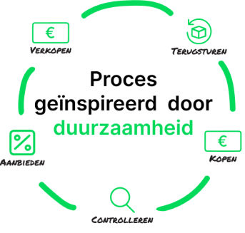

Het proces
Het proces van Retourgoederen begint met het terugsturen van een product door de klant van een ander bedrijf. Deze producten worden vervolgens vernietigd door bedrijven. Door de vele contacten kan Retourgoederen dit voorkomen en deze producten opkopen tegen een voordelige prijs. Na het kopen van de producten worden ze gecontroleerd op de staat en conformiteit met de richtlijnen. Als het product aan de vereisten voldoet, wordt het aangeboden voor verkoop. Zo zorgt Retourgoederen dat retour gestuurde producten die vernietigd zouden worden toch een tweede leven krijgen en hiermee worden hergebruikt.